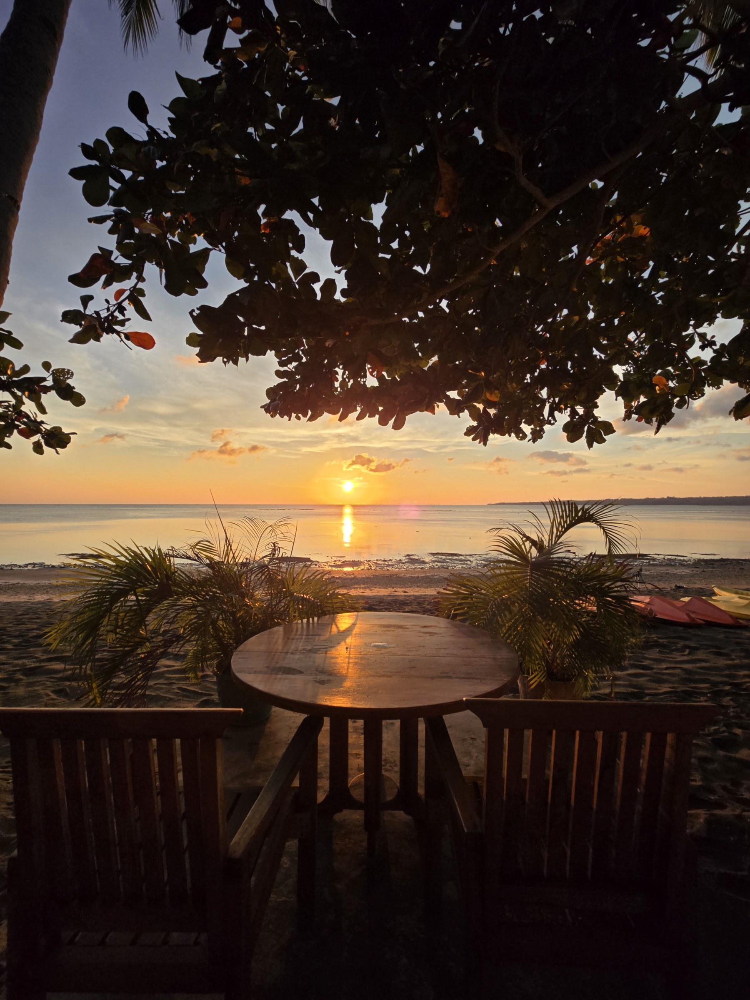
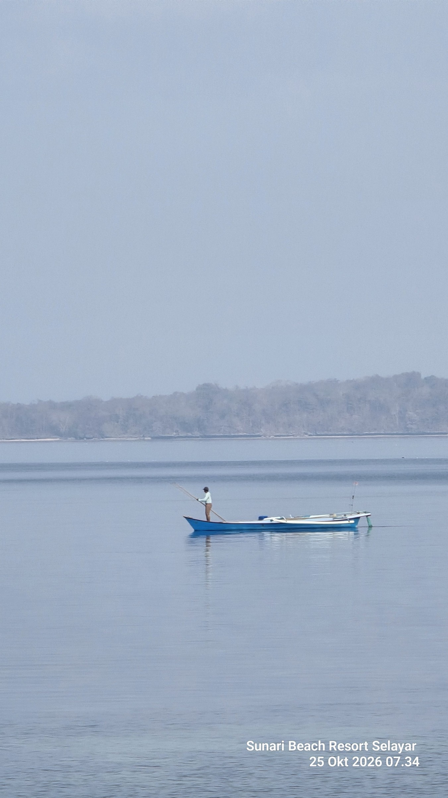
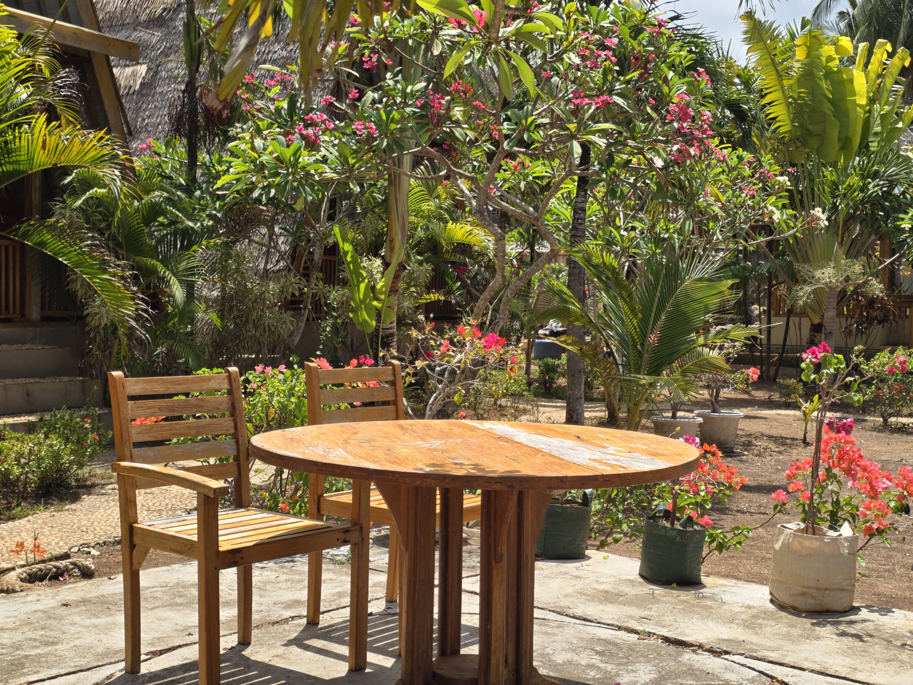
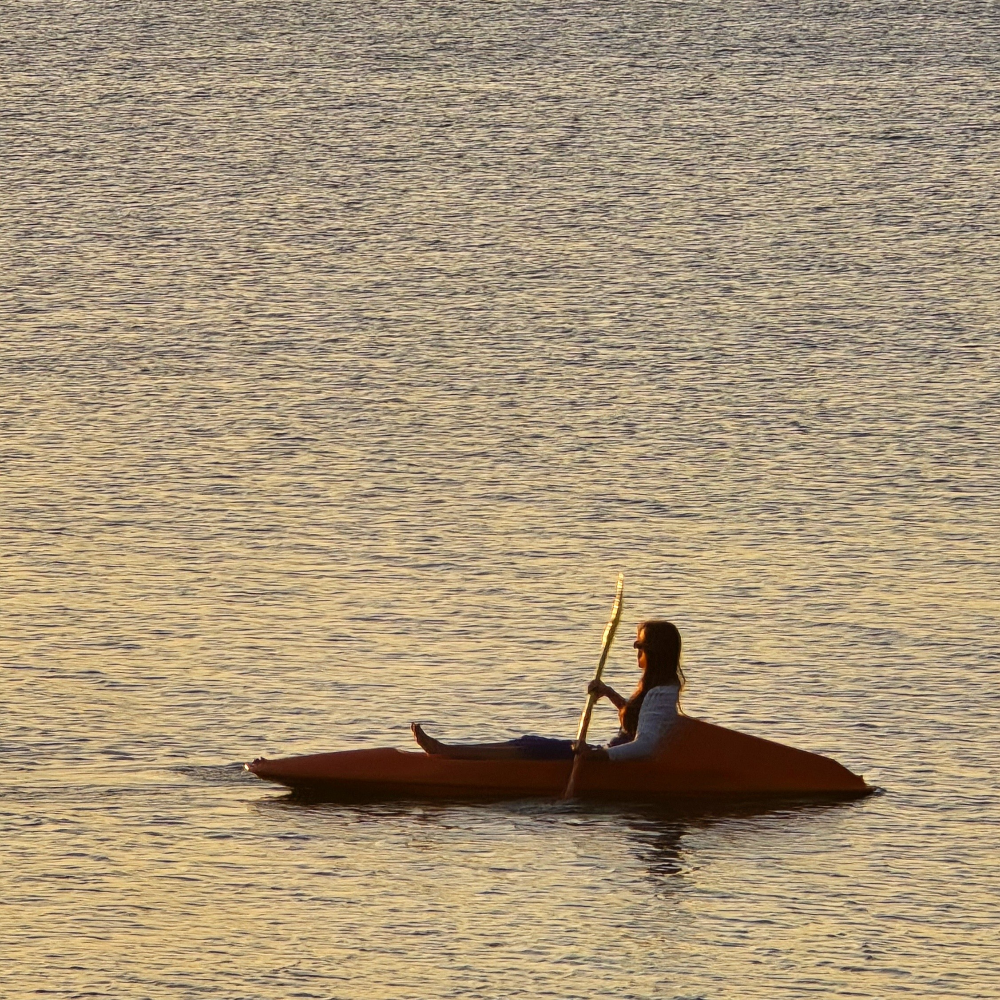
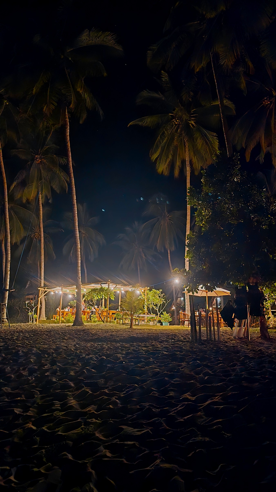
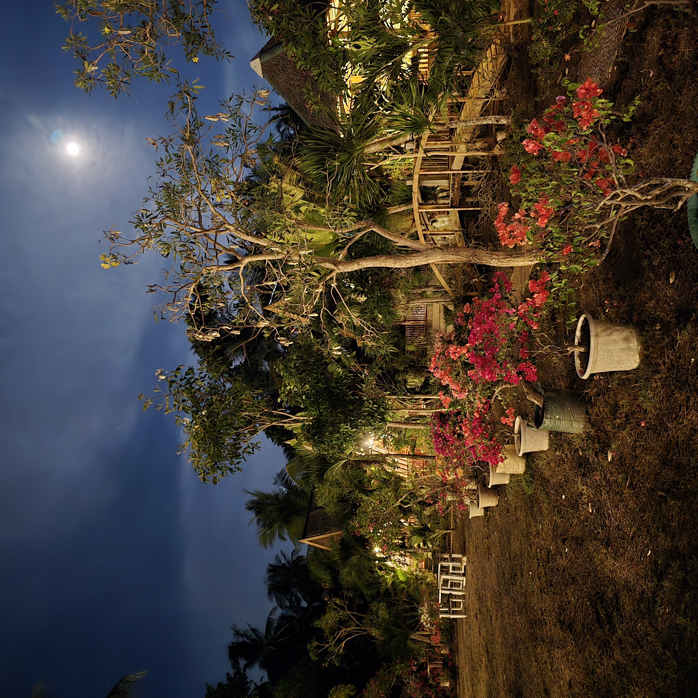

Lebih dari
Menginap.
Sebuah Rasa.
Ketuk untuk lanjut →


02 — 10
Lebih dari Menginap
Pagi yang pelan
Perahu nelayan mulai pulang dari laut, membawa hasil tangkapan dan senyum yang tulus.

03 — 10
Lebih dari Menginap
Taman untuk jeda
Saya datang untuk pantainya, tapi taman Sunari diam-diam mencuri hati saya lebih dulu.

04 — 10
Lebih dari Menginap
Siang di bawah ketapang
Di bawah pohon yang teduh, waktu terasa berjalan lebih lambat dan lebih bersahabat.

05 — 10
Lebih dari Menginap
Mendayung saat sore
Bayangan pohon kelapa semakin panjang, tanda pertunjukan sore akan segera dimulai.

06 — 10
Lebih dari Menginap
Ayunan menghadap senja
Menunggu senja di Sunari mengajarkan saya bahwa hal indah memang layak ditunggu.

07 — 10
Lebih dari Menginap
Duduk, diam, menikmati
Saya tidak butuh motivasi panjang, saya hanya butuh satu sore di tepi pantai Sunari.

08 — 10
Lebih dari Menginap
Makan malam di bawah pohon kelapa
Aroma ikan bakar segar memenuhi udara malam, membuat perut kami langsung keroncongan.

09 — 10
Lebih dari Menginap
Lalu malam datang
Lampu-lampu taman mulai menyala, menciptakan suasana hangat dan romantis di malam hari.